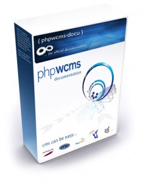

Sie sind hier: Deutsch
Willkommmen auf phpWcms-docu

Wir freuen uns Sie beim Projekt „Dokumentation für das Web Content Management System phpwcms” begrüßen zu dürfen.
Diese Website ist sowohl an Ein- als auch Umsteiger gerichtet mit dem Ziel, die Arbeit mit phpwcms zu erleichtern und sich somit auf das Wesentliche konzentrieren zu können.
Daher sehen wir dieses Projekt als eine Art Kompass, welches Ihnen die Möglichkeiten von phpwcms aufzeigt und Sie erfolgreich, ohne große Umwege, zu Ihrer fertigen Web-Anwendung führen soll. Weitere Antworten zu Fragen finden Sie auch im Forum.
Wenn Sie sich allerdings noch auf der Suche nach einem geeigneten System befinden und Sie sich noch nicht auf ein bestimmtes CMS festgelegt haben, möchten wir Ihnen an dieser Stelle kleine Entscheidungshilfen geben.
Warum sollte phpwcms auf Ihrer Präsenz zum Einsatz kommen?
phpwcms bietet folgende Vorteile
(um nur einige zu nennen):
- Trennung von Inhalt und Design durch Templates
- Geringe Kosten der Inhaltspflege
- Einfache Relaunch-Möglichkeit
- Aktualität durch einfache Veröffentlichung
- Höhere Attraktivität durch dynamische Zusatzdienste
- Einfache Erweiterung der Web-Präsenz ohne Spezialkenntnisse
- Individuelles Workflow-Management
- Einheitliches Erscheinungsbild der Website (Corporate Design)
Zudem ist es für Redakteure und Administratoren gleichermaßen intuitiv und ohne lange Einarbeitungszeiten zu bedienen. Da die Verwaltung Ihrer Website in dem System ausschließlich über einen Internet-Browser erfolgt, ist keinerlei Zusatzsoftware erforderlich und Sie pflegen Ihre Website über einen einfachen Internetanschluss - sei es im Büro oder per Notebook unterwegs.
Die passende Dokumentation für dieses großartige CMS möchten wir Ihnen anhand dieser Website mit auf den Weg geben. Bitte bedenken Sie, dass dieses Projekt von Freiwilligen in ihrer Freizeit erstellt wird und daher noch nicht alle Bereiche inhaltlich abgedeckt sind. Anregungen, Kritik oder Lob nehmen wir gerne entgegen. Am einfachsten geht der Kontakt über unser Onlineformular, oder Sie senden Ihre E-Mail an docu@phpwcms.org. Ihr Eintrag in unserem ist ebenfalls willkommen.
Ihr Docu-Team